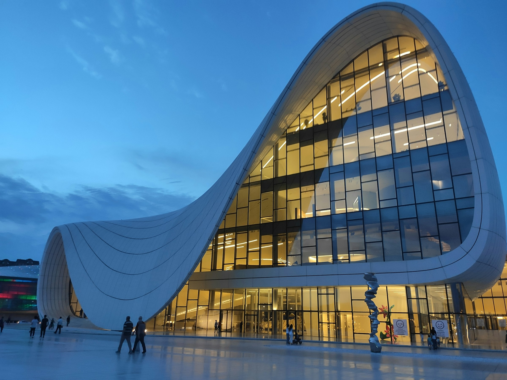
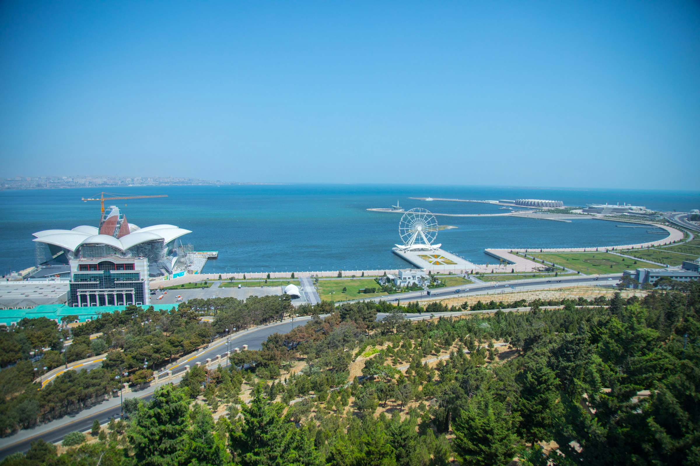
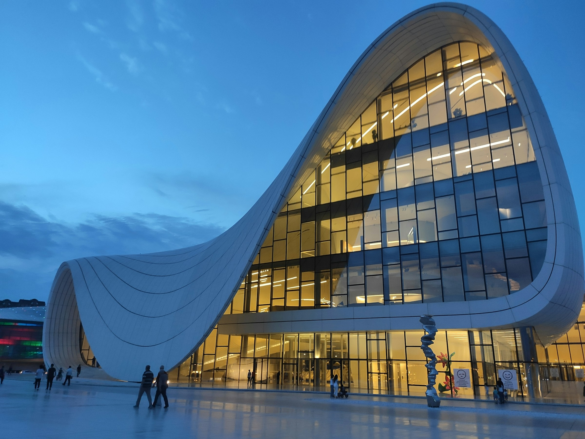
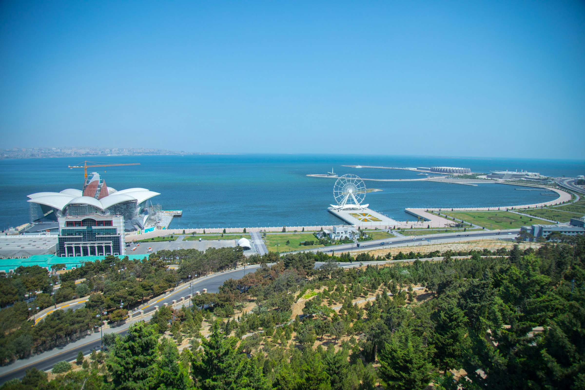

Discover Azerbaijan
Nestled between the Caspian Sea and the majestic Caucasus Mountains, Azerbaijan unveils a mesmerizing tapestry of natural wonders and cultural marvels waiting to be explored. From the verdant valleys that whisper tales of ancient civilizations to the snow-capped peaks that stand as silent sentinels of history, the country is a captivating canvas that beckons adventurers and nature enthusiasts alike. As you journey through Azerbaijan, you'll be embraced by the genuine warmth of Azerbaijani hospitality, a tradition that has withstood the test of time. Immerse yourself in a vibrant culture where the echoes of ancient traditions harmonize seamlessly with the rhythms of modern influences. The Azerbaijani people, renowned for their friendliness and hospitality, embody a rich heritage that comes alive through the rhythmic beats of music, the poetry of dance, and the exquisite flavors of a cuisine adorned with aromatic teas and delectable local delicacies. Discover a land where every corner is a testament to a proud history, where the echoes of past civilizations resonate through ancient cities and UNESCO World Heritage sites. Uncover the secrets of a nation that bridges the gap between East and West, offering a unique blend of traditions and modernity. Azerbaijan invites you to embark on a journey where history, hospitality, and breathtaking scenery converge. This gem of the South Caucasus awaits, ready to captivate your senses and create memories that will last a lifetime. Explore Azerbaijan – a destination where the spirit of adventure meets the embrace of culture. Your extraordinary journey begins here.
 


